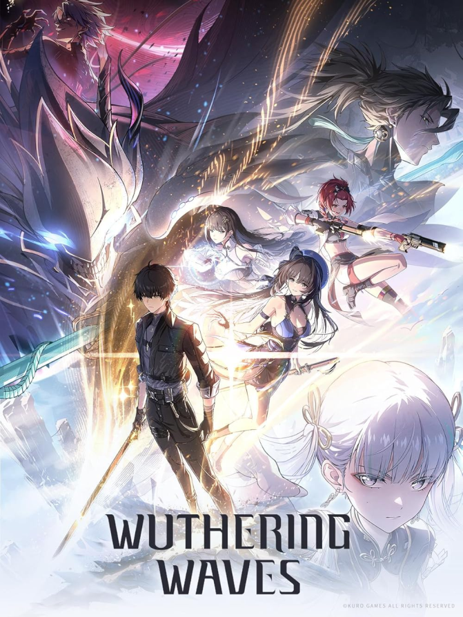

Genre: Action RPG
Developed by miHoYo
Wuthering Waves is an open-world action RPG developed by miHoYo, the creators of Genshin Impact. Set in a vibrant and expansive world, players embark on a journey filled with exploration, combat, and storytelling. The game features stunning visuals, a rich narrative, and a diverse cast of characters, making it a highly anticipated title in the gaming community.
Free to play